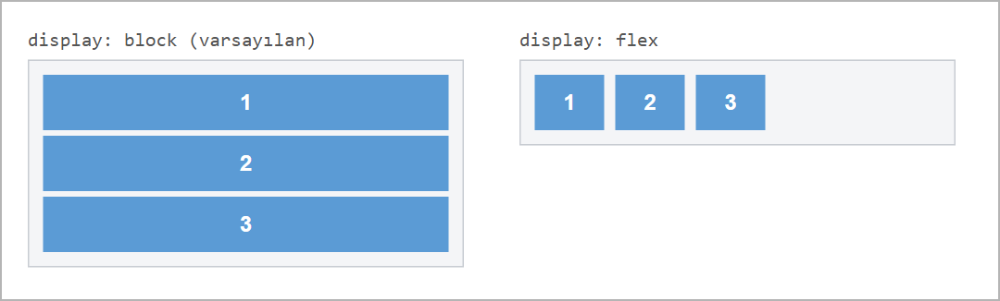
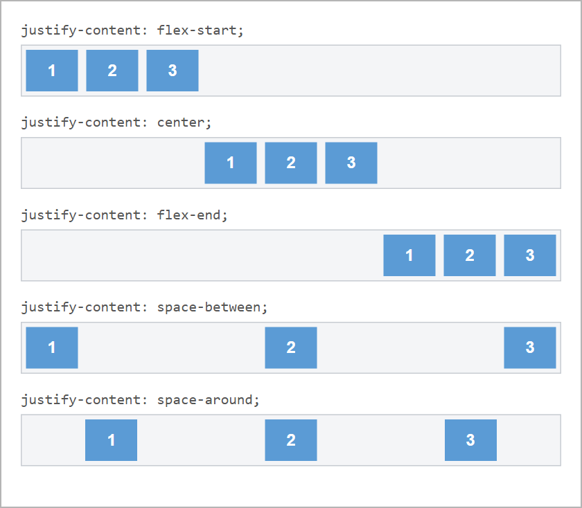
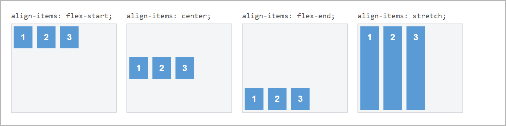
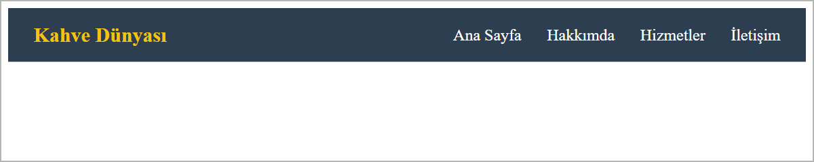

Flexbox 1
Bu sayfada
Bir sorunla başlayalım: HTML'de <div> gibi blok öğeler varsayılan olarak alt alta dizilir. Oysa web sayfalarında menüleri, kartları ve sütunları çoğu zaman yan yana ve hizalı görmek isteriz. Eskiden bunu yapmak zordu; Flexbox (esnek kutu düzeni) bu işi kolaylaştırır.
1Flexbox Nedir?
Flexbox'ta iki taraf vardır:
- Kapsayıcı (flex container): İçindeki öğeleri düzenleyen ana kutu.
- Öğeler (flex items): Kapsayıcının doğrudan içindeki öğeler.
Bir kutuyu flex kapsayıcısına çevirmek için ona display: flex; verilir. Bunu yaptığınız anda, içindeki öğeler alt alta değil, yan yana dizilir:

.kapsayici {
display: flex;
}
display: flex öğelere değil, onları içeren ana kutuya (kapsayıcıya) uygulanır. Hizalama özellikleri de (aşağıdaki justify-content ve align-items) bu ana kutuya yazılır.
2İki Eksen: Yatay ve Dikey
Flexbox'ta iki eksen üzerinde hizalama yaparız:
- Ana eksen (yatay):
justify-contentile yönetilir: öğeleri sola, ortaya, sağa yaslar veya aralarına boşluk koyar. - Çapraz eksen (dikey):
align-itemsile yönetilir: öğeleri kutunun üstüne, ortasına, altına hizalar.
Bu eşleşme (ana eksen yatay, çapraz eksen dikey) öğelerin yan yana dizildiği varsayılan durum içindir. Öğeler alt alta dizildiğinde eksenler yer değiştirir (Flexbox 2 ve Sayfa Yerleşimi, 11. hafta).
3justify-content (Yatay Hizalama)
justify-content, öğelerin kapsayıcının içinde yatayda nasıl dağıtılacağını belirler:

| Değer | Etkisi |
|---|---|
flex-start | Öğeleri sola yaslar (varsayılan). |
center | Öğeleri ortalar. |
flex-end | Öğeleri sağa yaslar. |
space-between | İlk ve son öğeyi uçlara yaslar, aralara eşit boşluk koyar. |
space-around | Her öğenin etrafına eşit boşluk koyar. |
.kapsayici {
display: flex;
justify-content: center;
}
4align-items (Dikey Hizalama)
align-items, öğelerin kapsayıcının içinde dikeyde nasıl hizalanacağını belirler:

| Değer | Etkisi |
|---|---|
flex-start | Öğeleri üste hizalar. |
center | Öğeleri dikeyde ortalar. |
flex-end | Öğeleri alta hizalar. |
stretch | Öğeleri kutunun yüksekliğine kadar uzatır (varsayılan; öğeye height verilmemişse). |
.kapsayici {
display: flex;
align-items: center;
}
Bir öğeyi bir kutunun tam ortasına (hem yatay hem dikey) almak için justify-content: center; ve align-items: center; birlikte kullanılır. Bu, Flexbox'ın en sık kullanıldığı durumlardan biridir.
5Örnek: Yatay Menü (Navbar)
Şimdi bu haftanın çıktısını hazırlayalım: solda site adı, sağda menü bağlantıları olan bir navbar. Menü çubuğunu bir flex kapsayıcısı yapıyoruz; space-between site adını sola, bağlantıları sağa iter; align-items: center ise hepsini dikeyde ortalar.
<!DOCTYPE html>
<html lang="tr">
<head>
<meta charset="utf-8">
<title>Navbar</title>
<style>
.menu {
display: flex;
justify-content: space-between;
align-items: center;
background-color: #2c3e50;
padding: 15px 25px;
}
.marka {
color: #f1c40f;
font-size: 20px;
font-weight: bold;
}
.baglantilar {
display: flex;
gap: 25px;
}
.baglantilar a {
color: white;
text-decoration: none;
}
</style>
</head>
<body>
<nav class="menu">
<div class="marka">Kahve Dünyası</div>
<div class="baglantilar">
<a href="#">Ana Sayfa</a>
<a href="#">Hakkımda</a>
<a href="#">Hizmetler</a>
<a href="#">İletişim</a>
</div>
</nav>
</body>
</html>
Tarayıcıdaki sonucu şöyledir:

Burada iki yeni küçük ayrıntı kullandık:
gap: 25px;→ flex öğeleri (menü bağlantıları) arasına eşit boşluk koyar.text-decoration: none;→ bağlantıların altındaki çizgiyi kaldırır (menülerde daha temiz görünür).
6Sıkça Yapılan 4 Hata
| Hata | Sonuç | Çözüm |
|---|---|---|
display: flex'i öğelere yazmak | Öğeler yan yana dizilmez | display: flex ana kutuya (kapsayıcıya) yazılır |
justify-content ile align-items'ı karıştırmak | Hizalama yanlış eksende olur | Varsayılan yönde justify = yatay, align = dikey |
display: flex olmadan hizalama yazmak | justify-content/align-items çalışmaz | Önce kapsayıcıya display: flex verin |
| Öğeleri kapsayıcının doğrudan içine koymamak | Flex etkisi görünmez | Öğeler kapsayıcının doğrudan içinde olmalı |
7Bu Haftanın Özeti
- Flexbox, öğeleri kolayca yan yana dizmeyi ve hizalamayı sağlar. Bir kutuyu flex kapsayıcısına çevirmek için ona
display: flexverilir. - Hizalama özellikleri ana kutuya (kapsayıcıya) yazılır; öğelere değil.
justify-contentyatay (ana eksen, varsayılan yönde) hizalamayı yönetir:flex-start,center,flex-end,space-between,space-around.align-itemsdikey (çapraz eksen, varsayılan yönde) hizalamayı yönetir:flex-start,center,flex-end,stretch.- Bir öğeyi tam ortaya almak için
justify-content: center+align-items: centerbirlikte kullanılır. - Navbar gibi yatay menüler,
display: flex+justify-content: space-between+align-items: centerile kolayca yapılır.
8Konu Sonu Testi
-
display: flexhangi öğeye uygulanır?- a) Öğelerin her birine
- b)
<body>etiketine - c) Öğeleri içeren ana kutuya (kapsayıcıya)
- d)
<head>etiketine
Cevabı göster
cdisplay: flexöğeleri içeren ana kutuya (kapsayıcıya) uygulanır. -
Flexbox'ta yatay hizalama (sola, ortaya, sağa) hangi özellikle yapılır?
- a)
align-items - b)
justify-content - c)
text-align - d)
margin
Cevabı göster
bYatay hizalamayıjustify-contentyönetir. - a)
-
Flexbox'ta dikey hizalama hangi özellikle yapılır?
- a)
justify-content - b)
align-items - c)
padding - d)
display
Cevabı göster
bDikey hizalamayıalign-itemsyönetir. - a)
-
justify-content: space-between;ne yapar?- a) Öğeleri ortalar
- b) İlk ve son öğeyi uçlara yaslar, aralara eşit boşluk koyar
- c) Öğeleri sola yaslar
- d) Öğeleri dikeyde ortalar
Cevabı göster
bspace-betweenuçlara yaslar ve aralara eşit boşluk koyar. -
Flexbox'ta bir öğeyi bir kutunun tam ortasına almak için hangi ikili kullanılır?
- a)
justify-content: center+align-items: center - b)
text-align: center+margin: auto - c)
display: block+center - d)
padding: center
Cevabı göster
aYatay + dikey ortalama için ikisi birlikte kullanılır. - a)
9Kendinizi Deneyin
Cevabınızı önce kendiniz yazın (defterinize ya da VS Code'da bir dosyaya), sonra cevapla karşılaştırın. Kod okuma ve hata bulma sorularında cevabınızı tarayıcıda deneyerek de kontrol edebilirsiniz.
1. (Kavram) Flexbox'ta "kapsayıcı" ve "öğe" ne demektir? display: flex hangisine yazılır ve ne değişir?
Cevabı göster
Kapsayıcı, öğeleri içine alan dış kutudur; öğeler onun doğrudan içindeki kutulardır. display: flex kapsayıcıya yazılır. Yazılınca kapsayıcının içindeki öğeler alt alta değil yan yana dizilir ve justify-content, align-items ile hizalanabilir hâle gelir.
2. (Kavram) Öğeler varsayılan yönde (yan yana) dizilirken justify-content ve align-items hangi yönde hizalama yapar?
Cevabı göster
justify-content ana eksende, yani yatayda hizalar. align-items çapraz eksende, yani dikeyde hizalar. Öğeler alt alta dizildiğinde bu eksenler yer değiştirir; bunu 11. haftada, Flexbox 2 ve Sayfa Yerleşimi konusunda göreceğiz.
3. (Kod okuma) Kapsayıcının içinde üç kutu vardır. Aşağıdaki CSS ile kutular nasıl yerleşir?
.kapsayici {
display: flex;
justify-content: space-between;
align-items: center;
height: 200px;
}
Cevabı göster
Üç kutu yan yana dizilir. Birinci kutu en solda, üçüncü en sağda, ikinci ortada durur; kutuların arasındaki boşluklar eşittir. Kutular 200px yüksekliğindeki kapsayıcının dikeyde tam ortasındadır.
4. (Hata bulma) Menü bağlantılarının yan yana ve ortalı olması bekleniyor, ama bağlantılar alt alta diziliyor. İki hatayı bulun ve düzeltin.
<nav class="menu">
<a href="#">Ana Sayfa</a>
<a href="#">İletişim</a>
</nav>
.menu a {
display: flex;
}
.menu {
justify-content: middle;
}
Cevabı göster
display: flexbağlantılara (öğelere) yazılmış; kapsayıcıya, yani.menu'ye yazılmalı.justify-contentiçinmiddlediye bir değer yok. Doğrusu:center
.menu {
display: flex;
justify-content: center;
}
5. (Kod yazma) Yüksekliği 300px olan .orta kapsayıcısının içindeki tek kutuyu hem yatayda hem dikeyde ortalayan CSS kuralını yazın.
Cevabı göster
.orta {
display: flex;
justify-content: center;
align-items: center;
height: 300px;
}
10Uygulamalar
Görev: Üç mavi kutuyu bir kapsayıcı içinde yatayda ve dikeyde ortalayan bir düzen oluşturun.
Çözüm:
<!DOCTYPE html>
<html lang="tr">
<head>
<meta charset="utf-8">
<title>Flex Ortalama</title>
<style>
.kapsayici {
display: flex;
justify-content: center;
align-items: center;
gap: 15px;
height: 200px;
background-color: #ecf0f1;
}
.kutu {
width: 80px;
height: 80px;
background-color: #3498db;
}
</style>
</head>
<body>
<div class="kapsayici">
<div class="kutu"></div>
<div class="kutu"></div>
<div class="kutu"></div>
</div>
</body>
</html>
Adımlar:
web_sitemklasöründe yeni bir.htmldosyası oluşturun.- Yukarıdaki kodu yazıp kaydedin (
Ctrl+S). - Tarayıcıda açın; üç kutunun kapsayıcının tam ortasında yan yana durduğunu gözlemleyin.
justify-contentdeğerinispace-betweenyapıp kaydedin,F5ile yenileyip farkı görün.
11Sınıf Uygulaması
Senaryo: Flexbox kullanarak, solda site adı ve sağda menü bağlantıları olan bir yatay menü (navbar) hazırlayın.
Yapılacaklar:
web_sitemklasöründenavbar.htmladında yeni bir dosya oluşturun.- Bir
<nav class="menu">oluşturun ve onadisplay: flex,justify-content: space-between,align-items: centerverin; koyu bir arka plan vepaddingekleyin. - Menünün soluna site adını (
.marka) yazın. - Menünün sağına bir
<div class="baglantilar">koyun; içine 3–4 bağlantı (<a>) ekleyin ve bu kapsayıcıyadisplay: flexilegapverin. - Bağlantılara beyaz renk ve
text-decoration: noneuygulayın.
Beklenen sonuç: Solda marka, sağda menü bağlantıları olan; dikeyde ortalanmış, koyu renkli bir navbar.
İpuçları: display: flex ana kutuya yazılır. justify-content yatay, align-items dikey hizalamayı yönetir.
12Notlar ve İpuçları
- Kapsayıcıya
heightverilmezse kapsayıcı en yüksek öğe kadar olur. Öğelerin boyu eşitsealign-itemsdeğerlerinin farkı görünmez; farkı görmek için kapsayıcıya birheightverin. gapyalnızca öğelerin arasına boşluk koyar; kapsayıcının kenarlarına boşluk eklemez. Kenar boşluğu için kapsayıcıyapaddingverin.- Chrome'un geliştirici araçlarında,
display: flexverilmiş öğenin yanında flex rozeti görünür. Rozete tıklayınca öğelerin yerleşimi sayfanın üzerinde çizgilerle gösterilir.
13Çalışma Soruları
İlk dört soruyu web_sitem klasöründe açacağınız yeni bir .html dosyasında deneyin.
- Üç
<div>'i bir kapsayıcıya koyupdisplay: flexile yan yana dizin. justify-contentdeğerini sırasıylacenter,flex-end,space-between,space-aroundyapıp farkları gözlemleyin.- Kapsayıcıya bir
heightveripalign-itemsdeğerlerini (flex-start,center,flex-end) deneyin. justify-content: centervealign-items: centerile tek bir kutuyu tam ortaya alın.- 3. haftada, Bağlantılar ve Görseller konusunun Sınıf Uygulamasında yaptığınız sitenin sayfalarına (
index.html,hakkinda.html) 5. bölümdeki gibi bir navbar ekleyin. - Navbar bağlantıları arasındaki boşluğu
gapdeğerini değiştirerek ayarlayın.
Kaynakça
- MDN: Flexbox (İngilizce)
- Chrome DevTools: Inspect and debug CSS flexbox layouts (İngilizce)
Bu haftanın Sınıf Uygulaması sayfanın sonundadır. Önce konu anlatımını okuyun, sonra uygulamayı kendi bilgisayarınızda yapın.